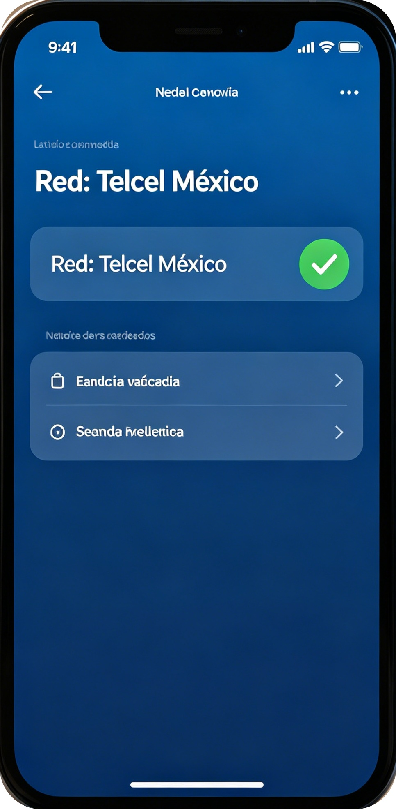
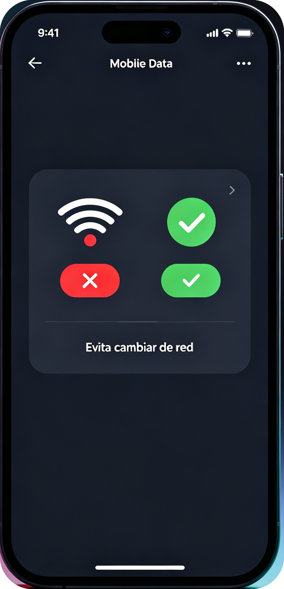
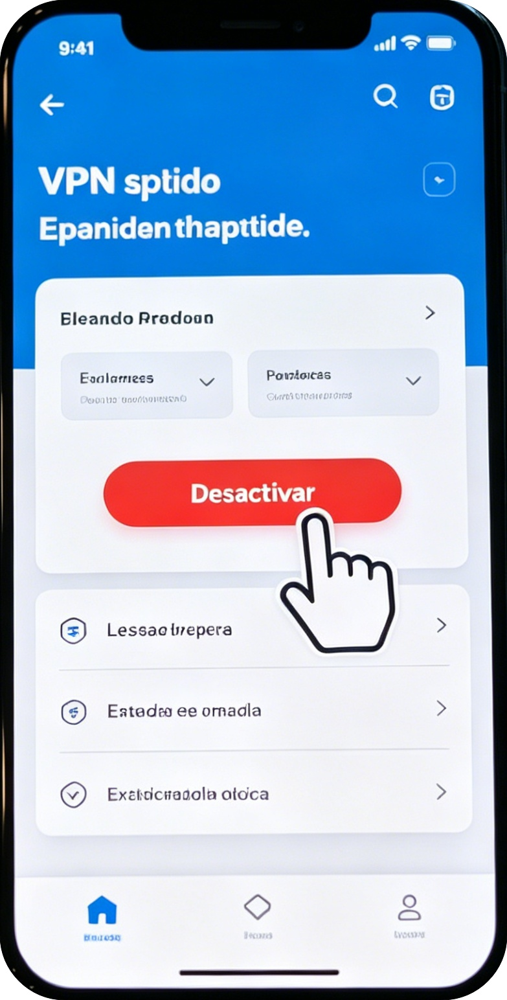
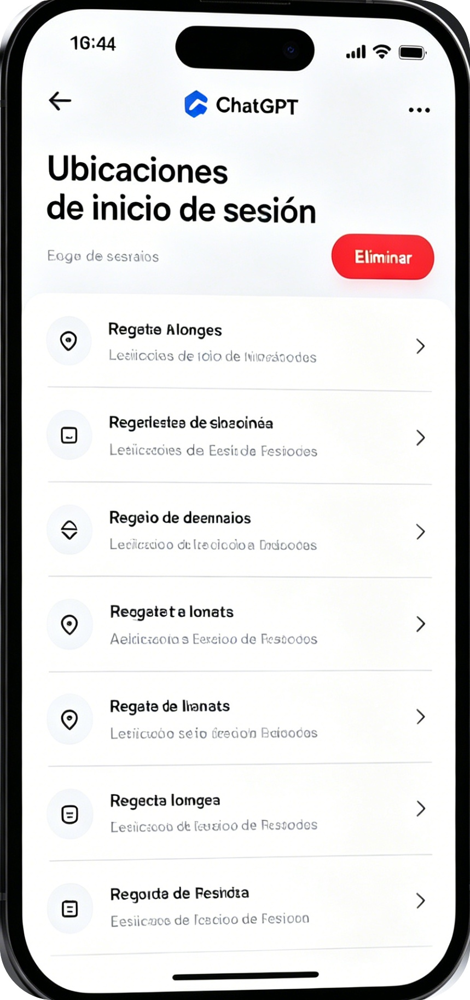

🇲🇽 Mantén una zona de acceso fija | Protege tu cuenta ChatGPT 2026
[Espacio publicitario superior]
🚀 Resumen rápido: Usa solo redes de México, no VPN gratuito ni WiFi público. El 90% de bloqueos son por cambios de ubicación.
OpenAI reforzó su seguridad en 2026. Los bloqueos no son por lo que escribes, sino por cambios constantes de IP y zona geográfica.
En México, muchos usuarios pierden su cuenta por usar VPN, redes públicas o alternar conexiones sin saber el riesgo.
⚠️ Casos reales de bloqueo en México
Caso 1 CDMX: VPN gratuito + WiFi escolar + centros comerciales → cuenta bloqueada permanentemente.
Caso 2 Guadalajara: VPN que cambia de país + múltiples dispositivos → suspensión sin recuperación.
Caso 3 Monterrey: Red empresarial + VPN doméstico → bloqueo por política de uso.
[Espacio publicitario central]
✅ Pasos para mantener zona fija (con imágenes)
Paso 1: Usa solo redes mexicanas
Telcel, Movistar o AT&T son las más seguras para ChatGPT.

Paso 2: No alternes WiFi y datos constantemente
Cada cambio de red cambia tu IP y activa alertas.

Paso 3: Desactiva VPN gratuito o foráneo
Las VPN que cambian de país son la causa principal de bloqueo.

Paso 4: Revisa dispositivos y ubicaciones
Elimina accesos de ciudades o países que no reconoces.

🚫 Redes y servicios QUE DEBES EVITAR
- VPN gratuitos que cambian de país
- WiFi de centros comerciales, aeropuertos, OXXO, hoteles
- Redes públicas con IP compartida
- VPN que alteren tu ubicación cada vez que te conectas
✅ Conexiones SEGURAS para México
- Datos móviles de operador mexicano (más recomendado)
- Internet fijo de tu casa
- eSIM mexicana sin tarjeta física
- VPN de paga CON MISMO SERVIDOR SIEMPRE
📌 Resumen rápido para no olvidar
- Una cuenta = una ubicación = una red estable
- Solo redes mexicanas
- Prohíbete VPN gratuito y WiFi público
- No cambies de conexión constantemente
[Espacio publicitario inferior]
💬 Deja un comentario
Dejé de usar VPN gratuito y ya no me bloquean la cuenta.
Me pasó lo del caso CDMX, ahora solo uso datos móviles.